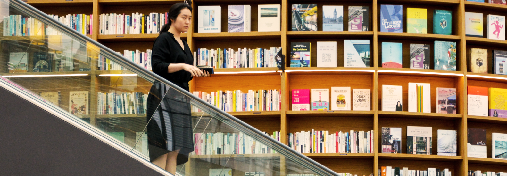

New Editor Experiences
A deep dive into the users of mid-sized Wikis.
Project Overview
New Editor Experiences is an investigation into users of mid-sized Wikis. This research identifies user characteristics, behaviors, and motivations using the Korean and Czech as representative examples of mid-sized Wikis. Then it examines how users interact with Wikipedia content and its interface. Insights from Czech and Korea are combined to create editor personas which are used to direct product development aimed at supporting users of mid-sized Wikis.
Problem Statement
Wikipedia requires a constant influx of productive new editors from diverse backgrounds to sustain itself and increase its quality and balance. However, for nearly a decade, the size of the project’s contributor community has stagnated as it has struggled to attract and retain such new editors. Research and product design that seek to augment editor participation have previously been focused on larger Wikipedias, particularly English.
To fill in the knowledge gap, the New Editor Experiences project focuses specifically on supporting new editors at mid-sized Wikipedias (roughly, those with 300 to 3,000 monthly active editors) and involves developing a deep understanding of these users.
Research Goals
For new editors of the Czech and Korean Wikipedias, this research seeks to understand:
Hypotheses | Questions
Characteristics, Behaviors, and Motivations
1. How do people determine how to spend their discretionary time?
2. Why do people engage in voluntary activities to shape their world?
Tech Ecosystems
3. How do people connect to the internet (though what devices, channels, etc.)?
4. How do they use the internet?
Engagement with Wikipedia
5. What is the perception of Wikipedia?
6. How does an editor’s engagement with Czech/Korean Wikipedia evolve over time?
Use of Wikipedia
7. How do people contribute to (or edit) Wikipedia?
8. How do new contributors of Czech/Korean Wikipedia interact with other members of the wiki community?
Approach
Field research in South Korea and the Czech Republic was conducted using design research methods—contextual inquiry using primarily ethnographic research methods. The primary research took place in two field sprints, one in South Korea and one in the Czech Republic. Each sprint lasted two weeks. The researchers conducted semi-structured, in-person ethnographic interviews and user observations. Research sessions were typically 45 minutes to 1.5 hours in duration, conducted in the local language, and conducted in respondents’ homes or workplaces or a public setting (e.g. cafe) with the respondent working on their own devices (i.e., mobile phone, laptop, or computer).
In addition, experts interviews were conducted with leaders from local online and offline communities which had a mix of traits comparable to Wikipedia—being online, volunteer-based, knowledge-related, and/or collaborative. Due to scheduling constraints, no expert interviews were conducted in the Czech Republic; there will be opportunities to follow up with experts remotely.
Outcomes & Findings